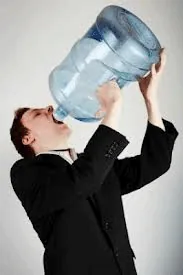

Навіщо потрібна бутильована вода в раціоні: порівняння з побутовими фільтрами
Коротко: побутовий фільтр покращує смак і запах водопровідної води, але результат залежить від картриджа, стану труб і своєчасного обслуговування. Бутильована вода від виробника проходить багатоступеневе очищення та контроль, а вам залишається лише замовити доставку. Який варіант зручніший, залежить від витрати води, бюджету та звичок родини.
Що робить побутовий фільтр і де його межі
Більшість домашніх фільтрів, чи то глечик, чи насадка на кран, працюють за принципом механічного очищення та сорбції на активованому вугіллі. Вони допомагають прибрати запах хлору, частину завислих часток і покращити смак. Це корисна функція, але вона розв’язує не всі завдання.
На що варто звернути увагу
- Стан труб. Вода проходить мережами та внутрішньобудинковими трубами, і її властивості біля крана можуть відрізнятися від тих, що були на виході з водоканалу. Фільтр лише частково згладжує цю різницю.
- Знос картриджа. Картридж має обмежений ресурс. Якщо його міняти рідше, ніж радить виробник, він перестає впоратися із завданням, а у вологому середовищі на ньому можуть розмножуватися мікроорганізми.
- Відсутність зрозумілого контролю. Для домашнього фільтра ви, як правило, не робите лабораторних вимірювань, тому про результат судите за смаком і запахом, а цього недостатньо.
- Витрати часу. Потрібно пам’ятати про терміни заміни, купувати витратні матеріали та промивати пристрій.
Чим відрізняється бутильована вода від виробника
Коли ви замовляєте воду у виробника, очищення виконується на обладнанні, яке неможливо зібрати на кухні. Це окремі ступені підготовки, мембранне обладнання та контроль перед розливом. Докладніше про етапи ми розповідаємо на сторінці технології очищення.
Багатоступеневе очищення
Вода «Кришталево-чиста питна вода» проходить 8 ступенів очищення, зокрема зворотний осмос і стерилізацію озоном. Зворотний осмос затримує розчинені домішки, а озонування знезаражує воду перед розливом. pH готової води близько 7,5.
Єдина тара й зрозуміла логістика
Воду розливають у багаторазові бутлі по 19,9 л. Порожню тару забирають під час наступної доставки, тому вам не потрібно утилізувати пластик і носити важкі сумки з магазину.
Передбачуваний смак
Смак води з бутля стабільний від замовлення до замовлення, тоді як вода з крана може змінюватися протягом року й залежати від району.
Порівняння варіантів
| Критерій | Побутовий фільтр | Доставка води 19,9 л |
|---|---|---|
| Вихідна вода | Водопровідна, залежить від труб | Очищена на виробництві |
| Обслуговування | Заміна картриджів за графіком | Не потрібне, треба лише замовляти воду |
| Зручність | Вода одразу з крана або глечика | Бутиль і помпа чи кулер, доставка додому |
| Витрати | Фільтр і регулярні картриджі | Оплата води, застава за тару, помпа за бажанням |
Ці варіанти не виключають один одного: багато родин залишають фільтр для господарських потреб, а для пиття й приготування їжі замовляють воду в бутлях.
Як оцінити будь-який варіант питної води
Незалежно від того, обираєте ви фільтр чи доставку, корисно поставити кілька простих запитань. Вони допомагають відрізнити прозору інформацію від гарних слів на упаковці.
- Звідки береться вода і як вона очищується. Виробник має пояснювати це без ухильних формулювань.
- Як часто потрібне обслуговування. Для фільтра це заміна картриджів, для бутлів — своєчасне замовлення та акуратне зберігання.
- Скільки коштує літр з урахуванням усіх витрат. Враховуйте не лише ціну води, а й витратні матеріали, тару та обладнання.
- Наскільки вам зручно користуватися. Варіант, що виглядає добре на папері, марний, якщо ним незручно користуватися щодня.
Зберігати бутлі варто в прохолодному сухому місці без прямого сонця, про це докладно написано в статті як зберігати бутлі з водою.
Кому зручніше перейти на воду з доставкою
- Родинам з дітьми. Для дитячого харчування обирайте воду, що відповідає рекомендаціям виробника сумішей і педіатра. Докладніше читайте в матеріалі вода для дітей: вимоги.
- Тим, хто часто готує вдома. Для чаю, супів і напоїв витрата води помітно зростає, і носити її з магазину незручно.
- Офісам і невеликим командам. Одна помпа чи кулер забезпечують питний режим без окремих закупівель.
- Тим, хто не хоче стежити за витратними матеріалами. Не треба пам’ятати про картриджі й терміни їх заміни.
Якщо у вас є захворювання шлунково-кишкового тракту або інші особливості здоров’я, питання про питний режим і склад води краще обговорити з лікарем: вода не замінює лікування.
Як ми працюємо в Crystal Water
Бутиль об’ємом 19,9 л коштує 100 грн, застава за бутиль становить 225 грн, помпа коштує 160 грн. Ми доставляємо воду в Броварах і Києві, мінімальне замовлення — 2 бутлі, а першу бутлю можна спробувати безкоштовно. Актуальні умови дивіться на сторінці послуги та ціни, а про компанію читайте в розділі про нас.
Якщо ви ще обираєте формат, прочитайте наш розбір як вибрати питну воду для дому, а інші матеріали зібрано в розділі статті.
Часті запитання
Чи може фільтр повністю замінити бутильовану воду?
Для багатьох побутових завдань фільтра достатньо, але він залежить від якості вихідної води та своєчасної заміни картриджів. Якщо вам важливі стабільний смак і очищення на виробництві, зручніше замовляти воду в бутлях.
Чи потрібно кип’ятити воду з бутля?
Для пиття зазвичай ні. Якщо готуєте суміші для немовлят, дотримуйтеся рекомендацій виробника суміші та педіатра.
Скільки коштує спробувати воду?
Мінімальне замовлення — 2 бутлі, першу бутлю можна спробувати безкоштовно. Бутиль коштує 100 грн, за тару береться застава 225 грн.
Чи потрібна помпа?
Вона не обов’язкова, але полегшує користування: помпа коштує 160 грн, і воду можна наливати, не піднімаючи важкий бутиль.
Спробуйте воду з доставкою додому
Замовте воду Crystal Water у Броварах або Києві: перша бутиль для проби безкоштовно, мінімальне замовлення — 2 бутлі.
Переглянути ціни та замовити